Git, Tout simplement
Commenceons par le commencement
la config !
git config --global user.name "Matthieu D."git config --global user.email "e@mail.com"- le tout sera enregistrer ~/.gitconfig
- Si on veux des information specifique a un repo
git config user.name "Matthieu DUVAL"git config user.email "email@mail.com"- le tout est stocké dans .git/config
les commandes de bases
git statusgit log --graph --all --decorategit fetchgit pull (--rebase)- 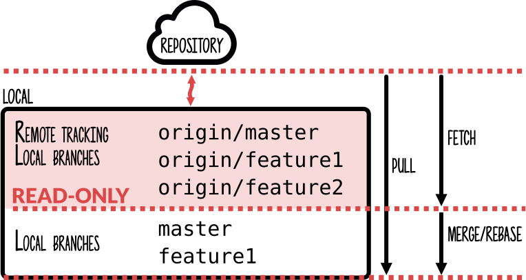
Les différentes zones locale!
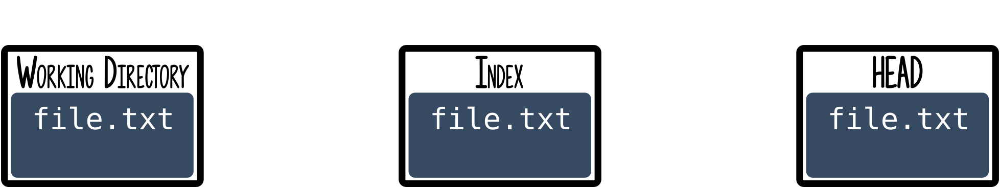Prennons un fichier en v1 file.txt
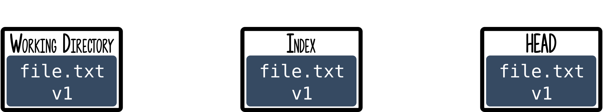lorsque on le modifie
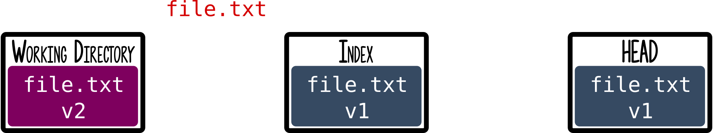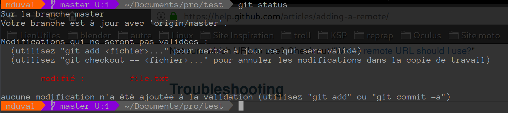
git add
git add file.txt
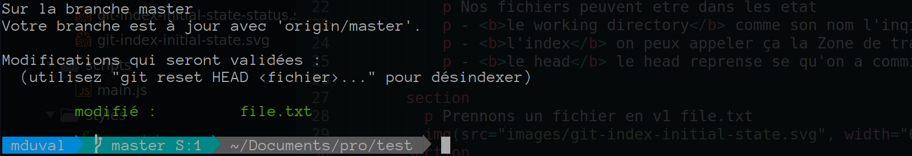
git commit
git commit -m "Mon fichier de la mort qui tue"
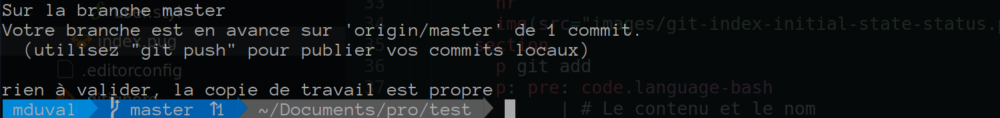
git push
ha la boulette !
on a fait une erreur

grâce au amend
- on commence par corriger notre fichier
git add file.txt- et la ça diffère un peux
git commit --amend- ça lance un interpreteur vi qui nous montre le nouveau commit
- on confirme que tout est ok (ECHAP :wq)
git push --force
c'est vachement bien mais ....
"C'est avant que tu as fait une erreur"
comment identifier un commit
- le SHA 231ca74f8444120a974ac786cf8c4d4b05de0a4a231ca74231ca74~
- la reference à la HEAD HEADHEAD~HEAD~2
- la reference à la BRANCHE mastermaster~master~2
- la reference au tag 0.1.00.1.0~0.1.0~2
Ça fonctionne aussi avec l'origin
- master origin/masterorigin/master~...
- head origin/HEADorigin/HEAD~...
mais...
- Le sha
origin/231ca74 - Le tag
origin/0.1.0
Pourquoi identifier un commit ?
le commit amend ne fonctionne pas tout le temps.
fixup !
- on commence par corriger notre fichier
git add file.txt- et la ça diffère un peu
git commit --fixup (sha du commit)- 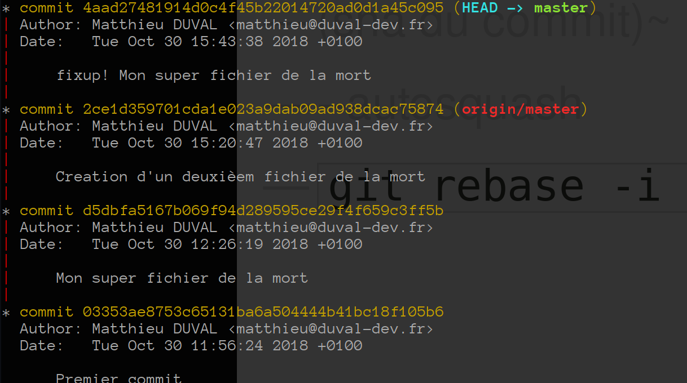
fixup !
- on va donc faire le rebase
- -i
- (sha du commit)~
- --autosquash
git rebase -i (sha du commit)~ --autosquash
fixup!
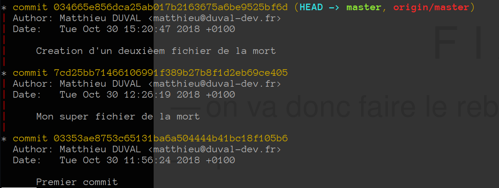\o/
"mais ça sert a rien ton truc !"
"Bon deplace moi tout ça sur une branche poubelle"
c'est donc ce que nous allons faire.
git branch trashgit push -u origin trashgit reset --hard $(sha premier commit)- 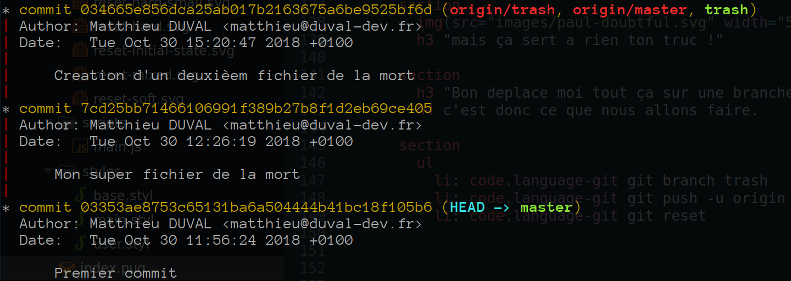
git push -f- 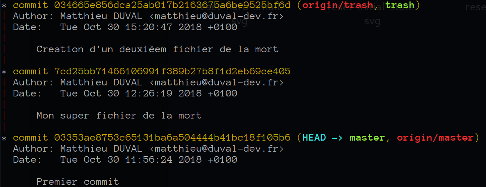
"Heu ouais mais si on a qu'une branche, je fais comment pour gerer tous mes environnements ?"
Voila ce que l'on a habituelement
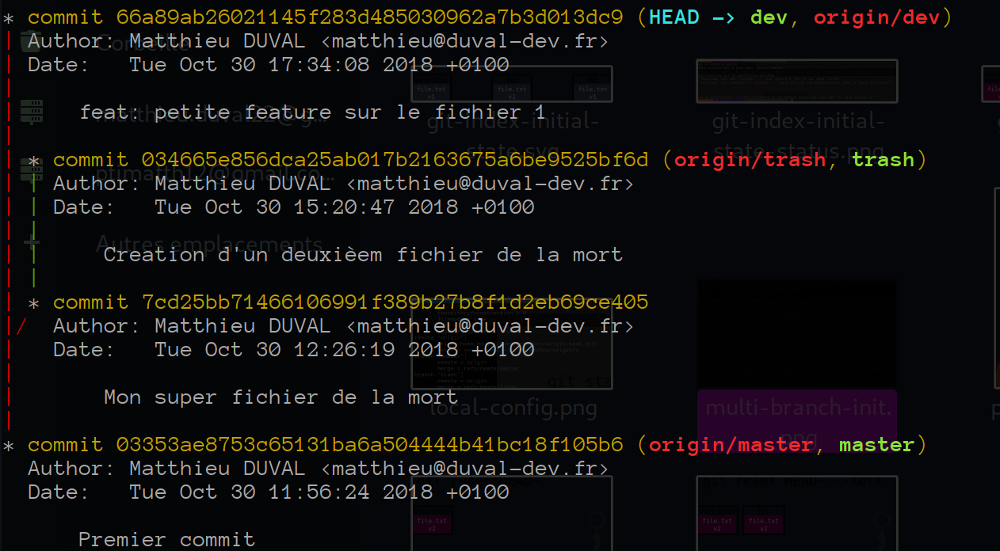L'étape du deploiment en prod
git checkout devgit pull --rebasegit commit -m "Preparation a la livraison"
--allow-emptygit pushgit checkout mastergit merge -m "Livraison 1.0" dev --no-ffgit tag 1.0git pushgit push --tags
Merci
Basé sur :
@github/mghignet/git-dammit-talk
Sources diapo:
@github/ptimatth/simply-git